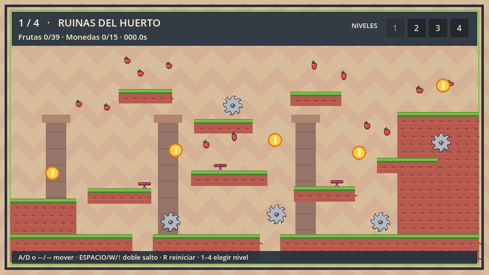

DOS MEJORAS DE MOVIMIENTO
El salto responde mejor.
Dos ventanas breves ayudan a que el salto ocurra cuando el jugador espera.
0,12 sbuffering
0,10 scoyote time
ANTES DE ATERRIZAR
Pulsa salto un poco antes.
Si no quedan saltos, el juego guarda la pulsación hasta 0,12 s y salta al tocar el suelo.
0,12 sentrada guardada


ESPACIO ↓
BUFFER · 0,12 s
AL ATERRIZAR → SALTA
DESPUÉS DEL BORDE
Aún puedes saltar.
El salto de suelo sigue disponible durante 0,10 s tras abandonar la plataforma.
0,10 sde margen

ESPACIO ↓
COYOTE · 0,10 s
SALE DEL BORDE → SALTA